Real prototypes of every layer (SITE-V2-DRAFT §3) on the whole Digital Electronics subject,
cut into chapters automatically, no hand placement anywhere. Each option has a desktop and a phone screenshot
(click to enlarge) and a live link. On the live page, the prototype controls bottom-left switch variants,
turn growth on/off and drag the progress slider to watch the map grow.
Open the live prototype → · card content is a placeholder except the K-map
chapter (reused v1 cards). Content is session 4; this session judges structure.
0What the engine did automatically
From the knowledge base: every concept, every "A leads to B" edge with its bridge, the chapter cuts, the trunk, the chapter names and colours, the teaching order.
117concepts, from KB units 1–5 + prerequisites
188flow edges, every one with a bridge sentence
30edges with a "predict first" question
18relates-to links (web layer only)
17chapters, each ≤ 9 concepts, cut by algorithm
0errors in the self-test (576 renders: every layer × variant × concept)
#
Auto-named chapter
Concepts
#
Auto-named chapter
Concepts
1
Numbers & codes · Gates (trunk)
9
10
Flip-flops
8
2
Boolean algebra
9
11
Timing
5
3
K-maps
7
12
Shift registers
5
4
K-maps · Combinational design
6
13
Counters
6
5
Adders
9
14
State machines: The FSM model
5
6
MUX / DEMUX
6
15
State machines: State diagram → state table
6
7
Decoder / encoder
5
16
Logic families
9
8
Display · Comparators
7
17
Memories & PLDs · Logic families
7
9
Latches · Timing
8
How the cut works: it orders concepts so that each topic stays together, taking topics in syllabus order.
It then splits that order into chapters by dynamic programming, which minimises the edges crossing a chapter boundary
(each chapter holds 5–9 concepts). A final pass moves single concepts where that cuts fewer edges. 85 of the 188 edges
cross a chapter boundary. That is expected: gates, XOR, minterms and the design pipeline feed nearly everything.
Weak spot I can see: the auto-names are functional but clunky, for example "State machines: State diagram →
state table". Better naming is a session-3 job.
ALayer 0: the subject map (chapters only)
The first thing you see: everything in the subject, without concepts, without overwhelm.
River my pick · desktop
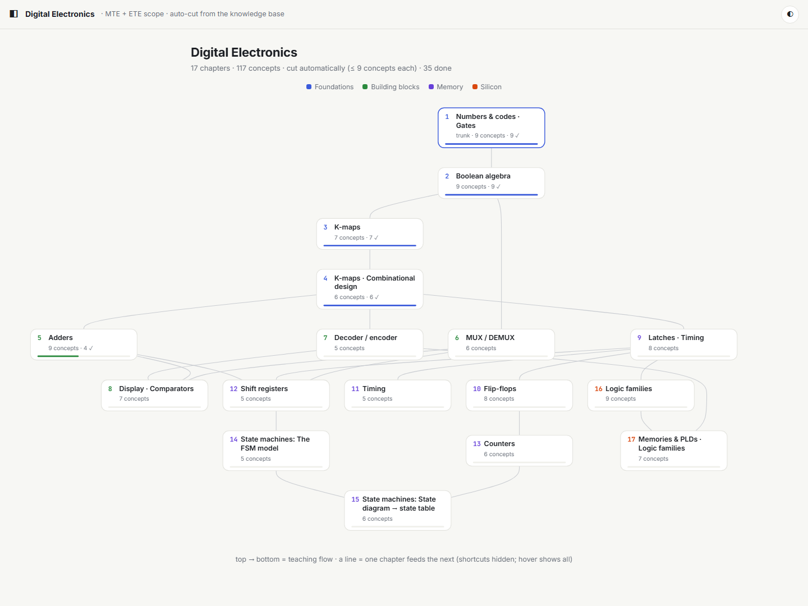
desktop
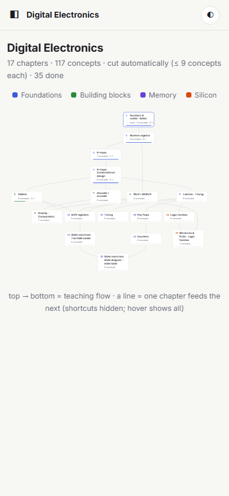
phone
The only one that literally shows converge and diverge: the trunk at the top, branching into building blocks and memory, then re-joining at state machines.
Shortcut links are hidden (a transitive reduction); hover shows every link of a chapter.
Crossings between rows 5–8, because the subject really is a web.
Your rule: introduce a concept as a leaf, and let it become a node as your understanding widens. Chapter 5, progress
30 → 33 → 36 → 40. A line becomes solid once its source is done and its target is done or next up. Not-yet lines are faint
ghosts, so the shape stays visible. Watch Half subtractor: at 33 it is done with one visible connection (○ leaf);
at 36 Full subtractor opens and it becomes a node (●).
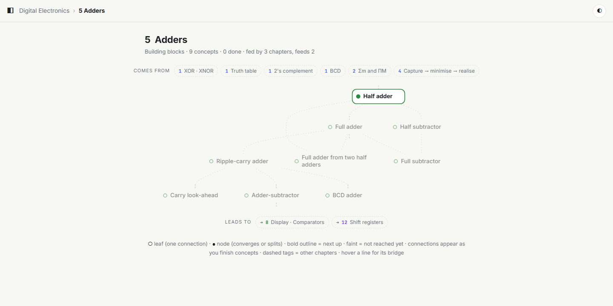
30 done: the chapter is new, one concept is next up
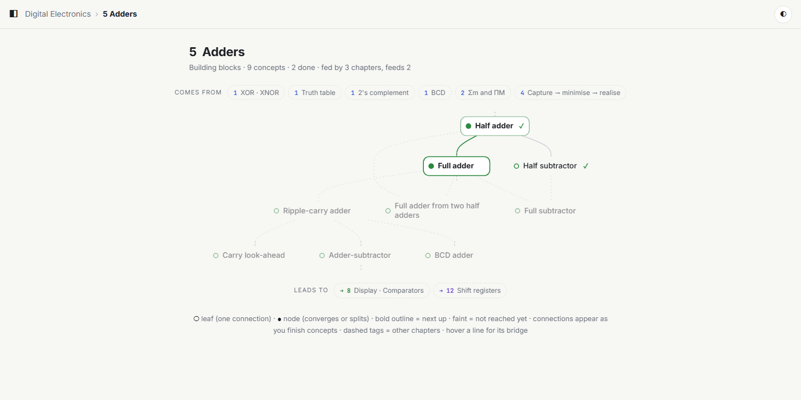
33: the first lines are solid
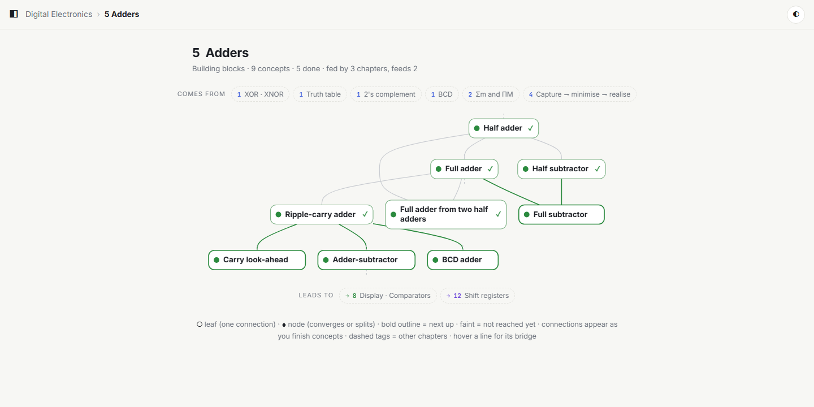
36: leaves have turned into nodes
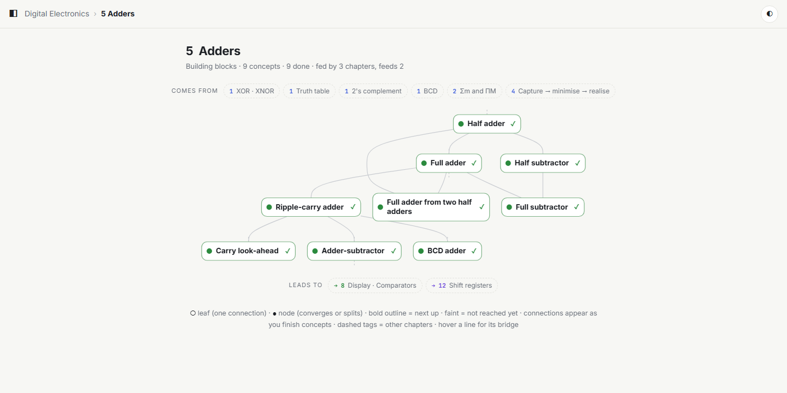
40: the chapter is complete, the whole flow is solid
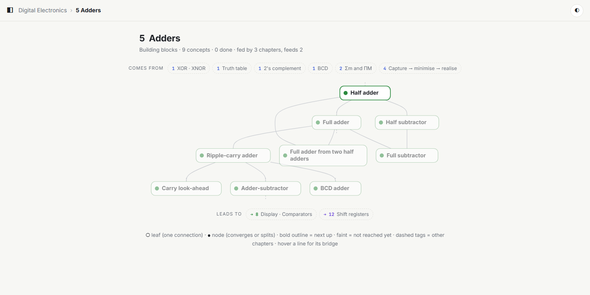
growth off: the full map from day one, for comparison
Something I found while building: my first version hid not-yet lines completely. An unstarted
chapter then looked like scattered dots with no shape at all, which defeats the point of a map. The ghost lines fix
that. You see where the flow will go; it just isn't solid until you've earned it. Tell me if even the ghosts are too
much.
DLayer 2: focus
Full takeover. Nothing but the concept, plus the from / leads-to strip. Tap a chip for the bridge. If the next concept
has a prediction question and you haven't done it yet, the chip asks you to predict first and keeps the bridge hidden.
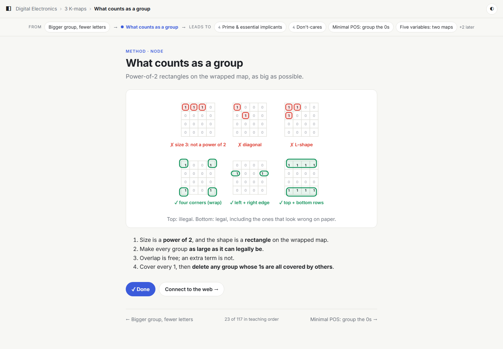
focus on a concept that has real (v1) content
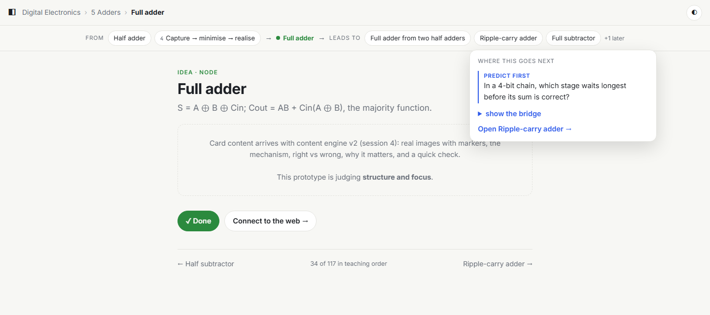
"leads to" chip: predict first, bridge hidden behind a tap
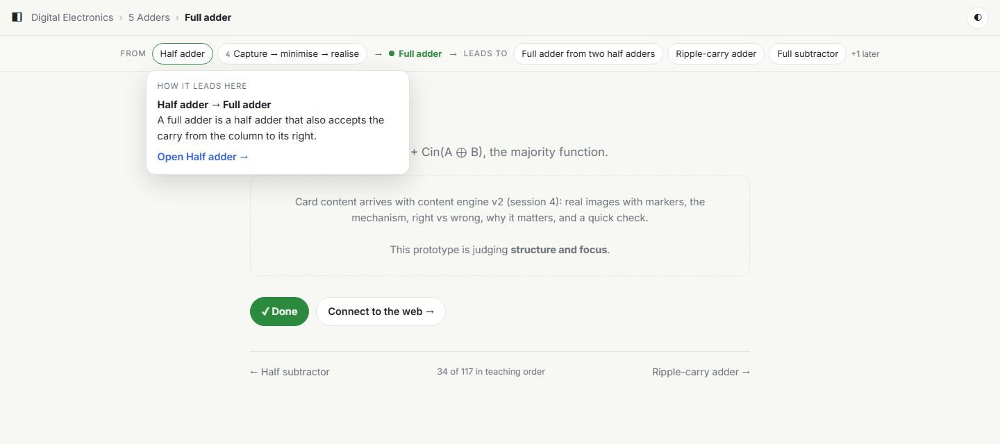
"from" chip: the bridge explaining how Half adder leads here
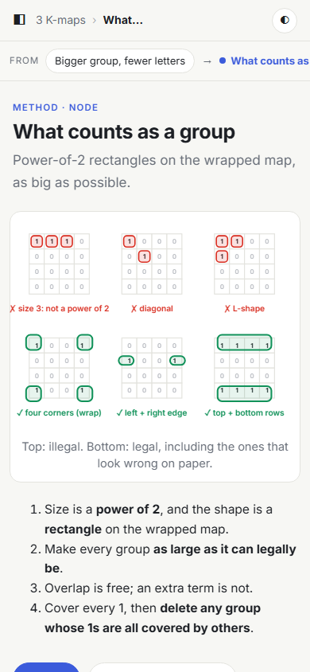
focus on a phone
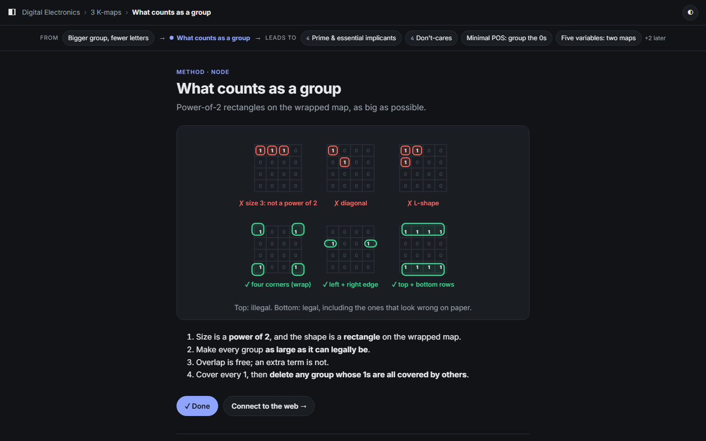
dark mode
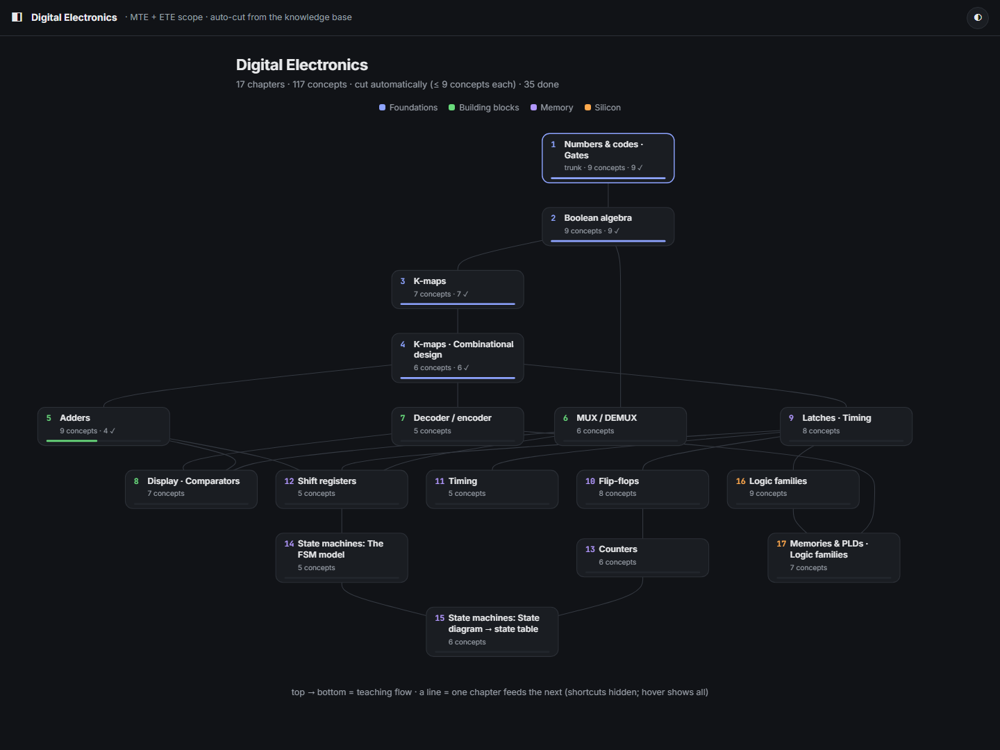
dark mode, L0 river
ELayer 3: the web (only after done)
"Connect to the web" stays locked until the concept is marked done. Then a side panel (a bottom sheet on a phone)
shows related ideas plus the links to other chapters, each with its sentence.
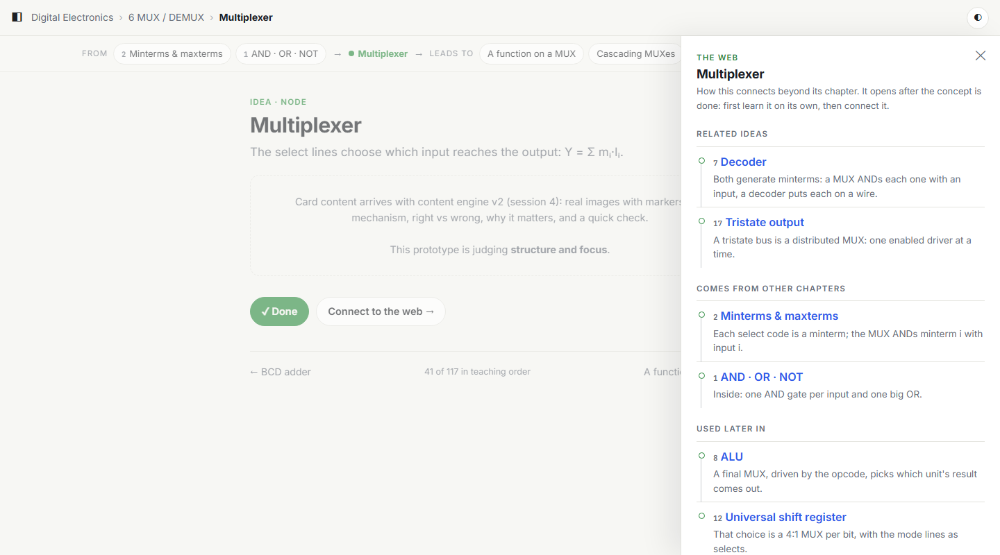
desktop: Multiplexer after it is done
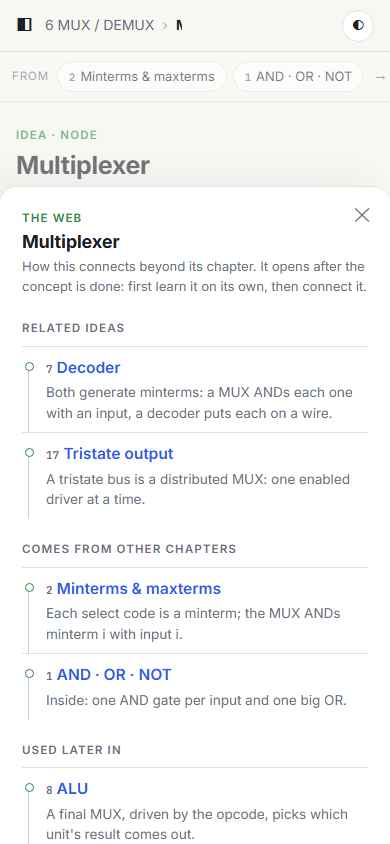
phone
!Problems I found (not hiding them)
1. Phone L1 shrinks. A chapter graph that is 4 concepts wide gets scaled to about 70% on a phone, so its labels
are small. The option for session 3 is a phone-only chapter layout (a vertical stream where merges show as joins).
2. River on a phone doesn't work. If you pick river, the phone needs a different L0 (strata or lanes). That is
why I recommend a split.
3. There are 17 chapters, and the draft hoped for 6–12 at L0. 117 concepts ÷ 9 per chapter can't be fewer than 13.
Either accept it (the stage grouping carries the overview), or have L0 show the 4 stages first and let chapters open
beneath them. The second adds a layer.
4. Auto chapter names need a better generator (see §0).
5. The focus strip on a phone is one line you swipe sideways. With many links it would otherwise take a
third of the screen. An alternative is "from 2 · leads to 4" counters that expand on tap.
Your picks. Reply in any words. The quickest form is: